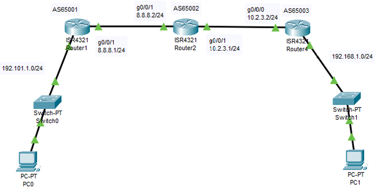

Border Gateway Protocol
This is a Border Gateway Protocol routing lab in which we will learn how to configure BGP routing for a network having three routers inside packet tracer.
Here in this Lab there are three Routers and a total of four network:
-
[1.] 192.101.1.0/24
-
[2.] 8.8.8.0/24
-
[3.] 10.2.3.0/24
-
[4.] 192.168.1.0/24
Figure 1 illustrates how the setup should look.

Figure 1: Static Routing
Download the Static_Routing_1.pkt file for the following steps.
Remember to use the ? if you are unsure on what to do next or how each command, argument and keyword works.
Step 1 - CONFIGURATION ON ROUTER R1
Router>en
Router# show ip inter br
Router# show ip protocols
Router# show ip bgp
Router# config t
Router(config)# int gig0/0/0
Router(config-if)# ip address 192.101.1.1 255.255.255.0
Router(config-if)# no shut
Router(config-if)# exit
Router(config)# int gig0/0/1
Router(config-if)# ip address 8.8.8.1 255.255.255.0
Router(config-if)# no shut
Router(config-if)# end
Router# show ip inter br
Step 2 – Configure BGP for Router 1
Router# config t
Router(config)# router ?
Router(config)# router bgp ?
Router(config)# router bgp 65001
Router(config-router)# neighbor ?
Router(config-router)# neighbor 8.8.8.2 ?
Router(config-router)# neighbor 8.8.8.2 remote-as 65002
Router(config-router)# ?
Router(config-router)# network 192.101.1.0 mask 255.255.255.0
Router(config-router)# end
Router# wr ?
Router# show ip bgp
BGP router identifier 192.168.1.1, local AS number 65001
Neighbor V AS MsgRcvd MsgSent TblVer InQ OutQ Up/Down State/PfxRcd
8.8.8.2 4 65002 0 0 1 0 0 00:45:46 4
Step 3 - CONFIGURATION ON ROUTER R2
Router>en
Router# show ip inter br
Router# show ip protocols
Router# show ip bgp
Router# config t
Router(config)# int gig0/0/0
Router(config-if)# ip address 8.8.8.2 255.255.255.0
Router(config-if)# no shut
Router(config-if)# exit
Router(config)# int gig0/0/1
Router(config-if)# ip address 10.2.3.1 255.255.255.0
Router(config-if)# no shut
Router(config-if)# end
Step 4 - CONFIGURE BGP for ROUTER R2
Router# config t
Router(config)# router ?
Router(config)# router bgp ?
Router(config)# router bgp 65002
Router(config-router)# neighbor ?
Router(config-router)# neighbor 8.8.8.1 ?
Router(config-router)# neighbor 8.8.8.1 remote-as 65001
Router(config-router)# neighbor 10.2.3.2 remote-as 65003
Router(config-router)# end
Router# wr ?
Router# show ip bgp
BGP table version is 3, local router ID is 10.2.3.1
Network Next Hop Metric LocPrf Weight Path
* 8.8.8.0/24 8.8.8.1 0 0 0 65001 i
*> 192.101.1.0/24 8.8.8.1 0 0 0 65001 i
Type escape sequence to abort.
Sending 5, 100-byte ICMP Echos to 8.8.8.1, timeout is 2 seconds:
!!!!!
Success rate is 100 percent (5/5), round-trip min/avg/max = 0/0/1 ms
Type escape sequence to abort.
Tracing the route to 192.101.1.2
1 8.8.8.2
0 msec 0 msec 0 msec
2 192.168.1.2 0 msec 0 msec 0 msec
Step 3 - CONFIGURATION ON ROUTER R3
Router>en
Router# show ip inter br
Router# show ip protocols
Router# show ip bgp
Router# config t
Router(config)# int gig0/0/0
Router(config-if)# ip address 10.2.3.2 255.255.255.0
Router(config-if)# no shut
Router(config-if)# exit
Router(config)# int gig0/0/1
Router(config-if)# ip address 192.168.1.1 255.255.255.0
Router(config-if)# no shut
Router(config-if)# end
Router# show ip inter br
Step 4 - CONFIGURE BGP for ROUTER R3
Router# config t
Router(config)# router ?
Router(config)# router bgp ?
Router(config)# router bgp 65003
Router(config-router)# neighbor ?
Router(config-router)# neighbor 10.2.3.1 ?
Router(config-router)# neighbor 10.2.3.1 remote-as 65002
Router(config-router)# network 192.168.1.0 mask 255.255.255.0
Router(config-router)# end
Router# wr ?
Step 5 Ping
Use tracert on pc1 and pc2 to see if your route is setup correctly, you may need to ping a few times to make the route tables upate.
You can download the working file here: BGP_Routing_PT2.pkt